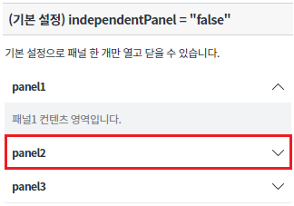
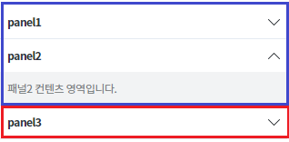
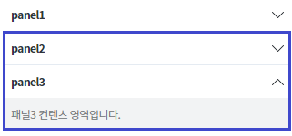
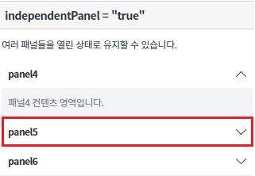
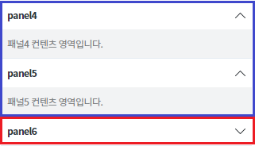
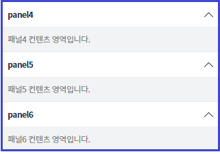
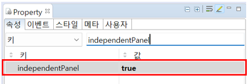

패널 클릭 시 다른 패널의 열림/닫힘 상태에 영향을 주지 않는 속성에 관한 예제입니다. 이 기능은 아래의 속성으로 사용할 수 있습니다. - independentPanel : 타 패널을 클릭 시 기존 패널의 오픈 상태 유지 또는 비유지
속성 'independentPanel' 미적용
속성 'independentPanel' 적용
panel2를 클릭합니다.
[브라우저(Chrome) 실행 예시]

panel1이 닫히고 panel2가 열려있는 것을 확인하고 panel3을 클릭합니다.
[브라우저(Chrome) 실행 예시]

panel2가 닫히고 panel3이 열려있는 것을 확인합니다.
[브라우저(Chrome) 실행 예시]

panel5를 클릭합니다.
[브라우저(Chrome) 실행 예시]

panel4, panel5가 열려있는 것을 확인하고 panel6을 클릭합니다.
[브라우저(Chrome) 실행 예시]

panel4, panel5, panel6이 열려있는 것을 확인합니다.
[브라우저(Chrome) 실행 예시]

Accordion의 속성을 정의합니다.
[필수] independentPanel="true" // [default: "false", "true"] 패널 클릭시 다른 패널의 열림/닫힘 상태에 영향을 주지 않는 속성
그림 1.웹스퀘어5 SP5 스튜디오의 Property View(속성창) 예시

[소스 코드 예시]
<!-- accordion 의 소스 본문 예시 --> <w2:accordion independentPanel="true" id="acd_exam_2"> <!-- 중략 --> </w2:accordion>
independentPanel
[웹스퀘어5 SP5 개발 가이드] Accordion
링크 : https://docs1.inswave.com/sp5_user_guide#d64f351e2a0c0423
Acccordion 다른 패널 클릭 시 기존 패널 오픈여부